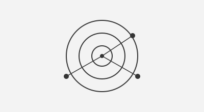
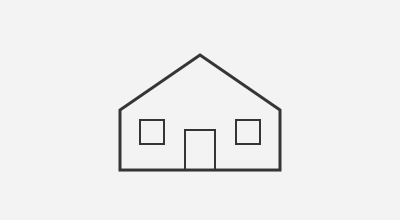
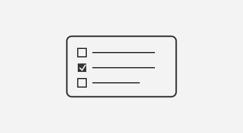
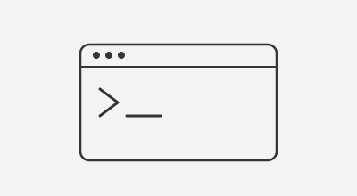

Flask
Advanced
Get To Know More
Holberton Coding School — Software Engineering Intensive Program
Universidad Interamericana de Puerto Rico — Computer Science coursework
Mech Tech College — Automotive Technology
Full-Stack Development
Backend Systems & APIs
System Design & Architecture
I am a Software Engineer, graduating from Holberton School's Software Engineering program, specializing in full-stack development and building scalable, real-world applications. Through hands-on capstone and team projects, I've developed strong skills in both frontend and backend engineering — from React/Vite dashboards to Node.js and Supabase-powered APIs.
I thrive in collaborative, team-based environments, working closely with teammates across the stack and using tools like GitHub Copilot alongside my own problem-solving to move quickly without sacrificing code quality. Always eager to learn and grow, I'm driven to build software that solves real problems and makes a meaningful impact.
Explore My
Advanced
Intermediate
Intermediate
Basic
Intermediate
Basic
Advanced
Intermediate
Advanced
Intermediate
Intermediate
Intermediate
Intermediate
Intermediate
Advanced
Advanced
Intermediate
Intermediate
Intermediate
Intermediate
Intermediate
Browse My Recent

Real-time network intrusion detection dashboard built with two other developers. Monitors live network traffic and visualizes cybersecurity threats.
React · FastAPI · WebSockets · SQLite · Docker

Airbnb-style full-stack web app. Users can create accounts, list properties, and browse available places, with backend logic managing users, places, and reviews.
Python · Flask · SQLite · RESTful APIs

Full-stack task management app with secure authentication, full CRUD task management, search/filtering, and dark mode.
React (Vite) · Node/Express · Supabase · JWT · Docker

Custom Unix command-line interpreter capable of executing basic shell commands, implementing command parsing and process execution.
C · Linux system calls (fork, execve, wait) · GCC
Get in Touch